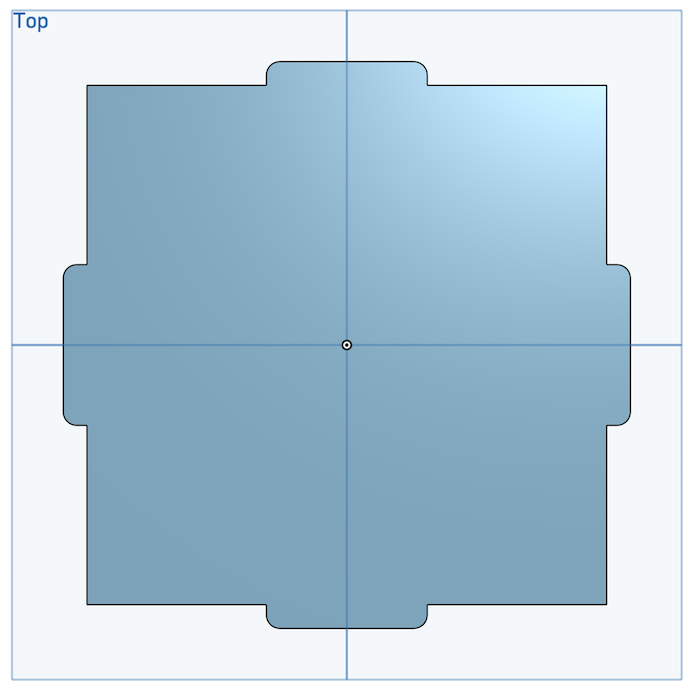
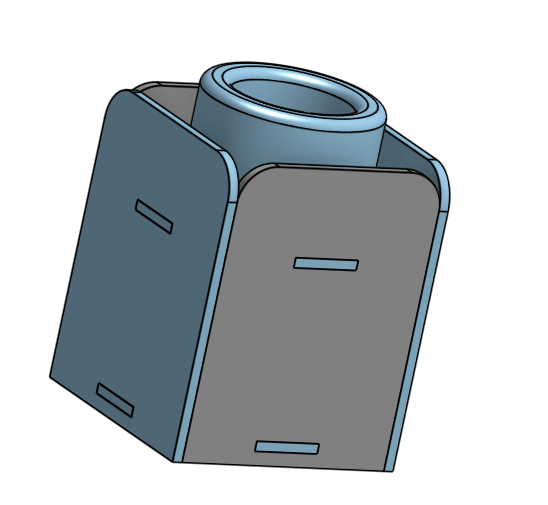
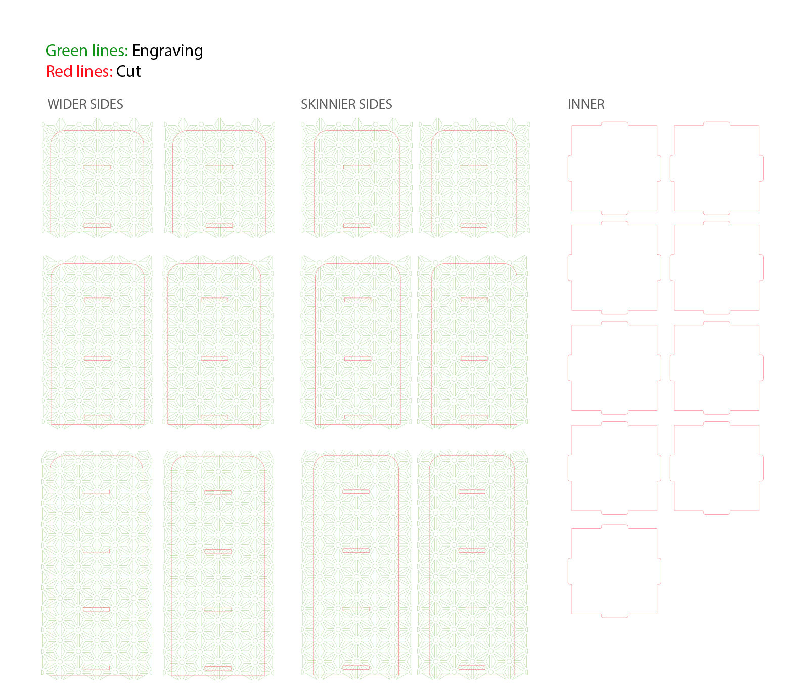

Final Project - Planter & Stands
For my final project, I made a set of 3 planters for succulents and stands to go along with them. I used the following techniques: CAD modeling, 3D printing, laster cutting, and molding and casting.
Inspiration & Planning

I was inspired by this set of planter stands by the designers at bernabeifreeman, and decided to use 3D printing and casting and molding to create 3 pots, and then laser cut 3 stands of different heights out of plywood.
Bill of Materials
| Material | Purpose |
|---|---|
| PLA fillament | 3D printed planter |
| Silicone kit, such as Oomoo 30 | Mold of the planter |
| Plaster of Paris | Casts of the planter |
| 1/4 inch plywood | Laser cut stands |
| Succulents or other small plants | to plant |
Source Files
- OnShape planter
- OnShape stands - shapes & assembly
- .ai file with all final stand pieces, including pattern
Planters: 3D Printing
When I first started this project, I 3D printed this planter from thingiverse. However, when I went to make a mold of it, I quickly realized that this would not work because it was shaped in such a way that the mold wouldn't come out without ripping.
The first pot I 3D printed. I realized this would not work well for molding and casting because of it's shape.
Instead, I needed a pot with a simpler shape, so I created one on OnShape. I made the walls fairly thick so that it wouldn't break when demolding.
I modeled walls to hold pour the silicone into, but due to time decided to print just the positive of the shape I wanted and use a yogurt container to hold the mold instead.

I 3D printed the planter and ran into a strange issue where, after working fine just one hour before, my Dremel software stopped exporting files that the 3d printers in the MILL would accept. Everything I exported kept getting stuck on the "copying file" screen. I tried using different STL files that I know had worked in the past, a different USB stick, and a different printer. Finally, I'm still not sure what changed, but one of the printers accepted my file.
I used standard Dremel settings, with Low quality and 20% infill.
I left the print overnight, and when I came back the next day, I saw that it was coming apart at one of the layers. After dropping it lightly on a table, it broke in half. But no problem - I just superglued the two pieces back together and continued on to make my mold.
Planters: Molding & Casting
Next, I created a silicone mold out of Oomoo 30. I was worried that I would have a hard time getting this out without ripping the silicone since the walls of the mold were not very thick and there was a large, dense silicone center that I had to pull the 3d printed piece out of. However, after some careful pulling and prodding, I was able to release the mold.
Making my silicone mold. I held down the mold to the bottom of the container with caulk.
I was now ready to cast. Originally, I planned to use concrete, but decided that since I already had so much Plaster of Paris left over from a previous assignment that I should try to use it up.
Using up Plaster of Paris from a previous assignment
Casting was fairly straightforward, and I didn't run into any issues.
Planter Stands
To create the stands, I laser cut plywood to assemble into 3 boxes of various sizes.
CAD Design
 My OnShape design included the sides for all 3 sizes of stand and an assembly of one of them (the rest were identical, just taller and with more notches).
I created the designs of the shapes in OnShape. I used the assembly feature to put the box together, just as a sanity check that all the dimensions were correct and that my planter would indeed sit nicely at the top of it.
I filleted the corners of the center pieces to make assembly easier.
I found a pattern as part of this pattern vector set from /www.freepatternsarea.com
Because I've found that OnShape does not make it easy to work with patterns and dxf files, I decided to apply the patterns in Illustrator instead. I downloaded the DXF files from OnShape to get the correct shapes and dimensions, and then added the pattern underneath the shapes.
Laser Cutting
When laser cutting, I first needed to test various tolerances to make sure that the fit of the notches would be very snug. I was not planning on using any other techniques to hold the box together such as glue or screws or nails, so when testing tolerances I went with the tightest fit - a notch width of 4.8mm for plywood that was 5.3mm wide.
Testing tolerances. The plywood was 5.3mm wide. As you can see by my labels, in my first test (left) I went up from 5.3 by increments of .1mm. However, I quickly realized that I actually needed to make the notches smaller. Eventually I settled on 4.8mm.
I wanted to use color mapping on the laser cutter and map the cuts and engraving to different colors. However, when I tried to do this, it would only recognize one color. When I talked to the MILL staff about this, they said that they had only been able to successfully use color mapping when they used vector for one color and raster for the other. We could not get vector color mapping to work. I did not want to raster my pattern because it would take way too long (the pattern had a lot of small lines).

Doing the first pass of a vector cut at a faster speed so that it engraves rather than cuts. I did a second cut pass on top of this pattern to cut out the shapes.
Instead of using color mapping, I ended up doing this in two passes - first engrave the pattern with a faster speed, then do another pass to cut the pieces out. This worked well. I am glad I did not go the raster route because even with vector settings, engraving the pattern took about 45 minutes total across all of the pieces.
Assembly
The fit of the boxes is very solid and definitley passes the shake test. In fact, I am not sure I could get the pieces apart if I tried. I had to use a rubber mallet to get some of the pieces to fit together (particularly the last side on the largest box).
Laser Cutter Settings (for 1/4 in plywood)
- Cut: Power 100, Speed 3, Frequency 10
- Engrave: Power 100, Speed 50, Frequency 50
Final Result
The last step was to plant the succulents and put them on top of the stands.
Overall, I am happy with how this project turned out. If I had to do this project again, or if I had more time, I would scale this whole design up so that I could fit more than one small plant in each.
Thank You
Thanks to the staff at the MILL that helped me troubleshoot my 3D printing issue and to Leo who left extra mixing materials in the MILL storage room.